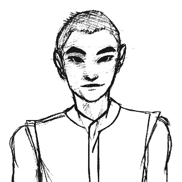

<h1>Divers
<time>A D&amp;D Adventure on the High Seas &#x2693;</time>
</h1>

<h2>The Party</h2>
<span class="hint--top hint--rounded hint--bounce" style="width:24%;" data-hint="Chosei Taurvantian, Half-elf"></span>
<span class="hint--top hint--rounded hint--bounce" style="width:24%;" data-hint='Nicholas "Niko" Kyrkos, Half-elf'></span>
<span class="hint--top hint--rounded hint--bounce" style="width:24%;" data-hint="Petra Kamenzdite, Human"></span>
<span class="hint--top hint--rounded hint--bounce" style="width:24%;margin-bottom:1.3em;" data-hint="Veryamorcion Taurvantian, Wood elf"></span>

<div class="admonition update">
<p class="admonition-title">Trackers</p>
<ul class="compact-list">
<li><p><strong>Inspiration:</strong> 7</p></li>
<li><p><strong>Current Date:</strong> The 23rd day of Tarsakh (the fourth month of the year), 3880</p></li>
</ul>
</div>

<h2>Common Inventory</h2>
<ul class="compact-list">
<li><a href="./owned-maps.html">Owned Maps</a></li>
<li><a href="./discovered-critters.html">Discovered Critters</a></li>
</ul>

<h2>Adventure Log</h2>
<ul class="compact-list">
<li><a href="./episode-1.html">Episode 1 - The Guy: The Trio</a></li>
<li><a href="./episode-2.html">Episode 2 - A Miner Inconvenience</a></li>
<li><a href="./episode-3.html">Episode 3 - Less Death</a></li>
<li><a href="./adventure-prompt.html">Adventure Prompt</a></li>
	<ul>
		<li><a href="./if-you-grew-up-in-drakkar.html">If You Grew Up In Drakkar</a></li>
		<li><a href="./if-you-grew-up-in-lorelette.html">If You Grew Up In Lorelette</a></li>
		<li><a href="./if-you-grew-up-in-ramon.html">If You Grew Up In Ramon</a></li>
	</ul>
</ul>